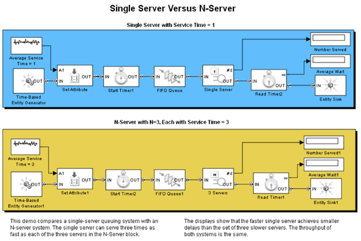

Single Server Versus N-Server
Contents
Overview of Single Server Versus N-Server
This model compares a single-server queuing system with an N-server system.
Structure of Single Server Versus N-Server
In this model, the single server can serve three times as fast as each of the three servers in the N-Server block. The displays show that the faster single server achieves smaller delays than the set of three slower servers. The throughput of both systems is the same.